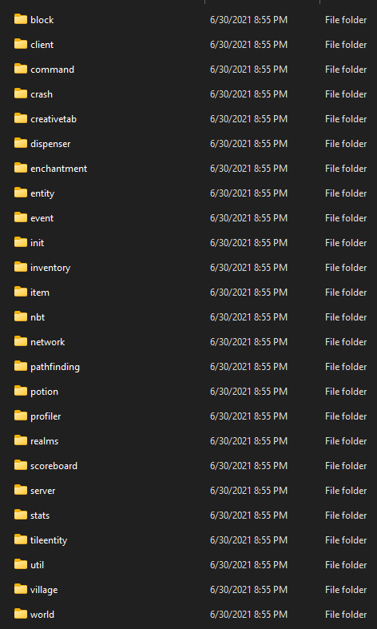
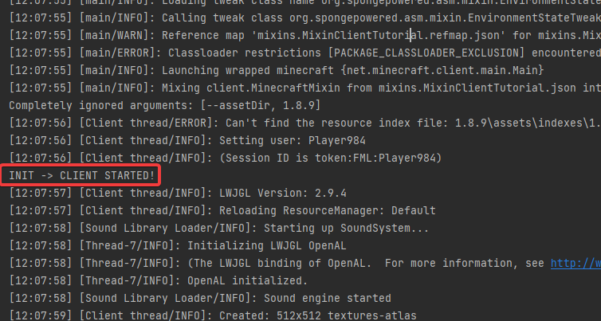

4 | Our first mixin
Creating our Mixin class
So, Minecraft, is seperated into different folders like so

The class we want to modify is the Minecraft class, which is located inside the client folder
Which means, we should make a client folder inside our mixins folder to house our mixin class
project
-> src
-> java
-> GROUP_NAME
-> mixins
-> client <-- Create this
Since we don't want to polute Minecraft's namespace, we append the word Mixin to our mixin classes to avoid it clashing with Minecraft class names, which means, inside the client folder we just created, create a class by the name of MinecraftMixin, which will act as a mixin for the Minecraft class
Making the mixin
We need to tell the Mixin library what class MinecraftMixin is going to act as a mixin for (a class that will add in it's own code to another class).
This is trivial, as we can use a simple annotation to denote that this is a mixin for the Minecraft class
1 2 3 4 | |
Now that we have told Mixin that we are going to modify the Minecraft class's methods, we can actually modify a function, but before that, we need to understand the two main ways of doing it
You can use the @Overwrite annotation, this will completely overwrite the code in a function, which is a destructive change, but it can be done like so:
1 2 3 4 | |
Note
There are other ways to inject into (ie: INVOKE_ASSIGN), but I will get into that later
However, since this is a destructive change, you may want to instead inject your code, which allows you to add code at either the HEAD of the function, which is the top of the function, or at the RETURN of the function, which is just before the return statement (or the end of the function), this is a bit more complex, as Mixin needs quite a bit more information
You need to supply
- The method name in a string
- Where you want to inject at
- The method parameters for the method to inject, and a
CallbackInfoobject with provides information about the function and allow you to handle certian things like cancel the function
Note
The RETURN can be replaced with HEAD if you want to inject from the start of the function
1 2 3 4 | |
Now that you know the basics of mixins, we can now attempt to write our mixin
-
Method name The
Minecraftclass has a method that runs when the game starts, aptly namedstartGame, which is what we want to inject into -
Where to inject Injecting at the
HEADof this function will allow our code to run before Minecraft has been initalised, andRETURNwill allow our code to run after Minecraft has been initalised, we will go forRETURNfor now, but you can easily switch it
We can now use the @Inject annotation to inject into the function startGame, at the location just before the function ends
For now, we can add a simple print statement to verify that this works via outputting to the console
Note
Why does this function have the name init, when the method we want to inject into is called startGame?
This is because we already tell Mixin that we want to inject into startGame with the method parameter in the annotation, so Mixin doesn't care what the function name is
1 2 3 4 | |
Mixin still doesn't know that MinecraftMixin exists
Remember the file that we created in 2 | Setting up, by the name of mixins.PROJECT_NAME.json?
Well, we need to modify that json file to tell Mixin that MinecraftMixin is a mixin that does infact, exist
So, open mixins.PROJECT_NAME.json
project
-> src
-> resources
-> mixins.PROJECT_NAME.json
It should look like this (obviously with your own customisations for your project structure)
1 2 3 4 5 6 7 8 | |
First get the relative path, from your mixins package to your class, so for us it should be client.MinecraftMixin, add that to the mixins array in the refmap file, like so
1 2 3 4 5 6 7 8 9 10 | |
🥳 You should now be able to see the output in the console

View the code for this tutorial here
How can I get help, ask questions, etcetera?
The easiest way is to join my Discord server, which you can find here https://discord.gg/45RhZT5e9Z